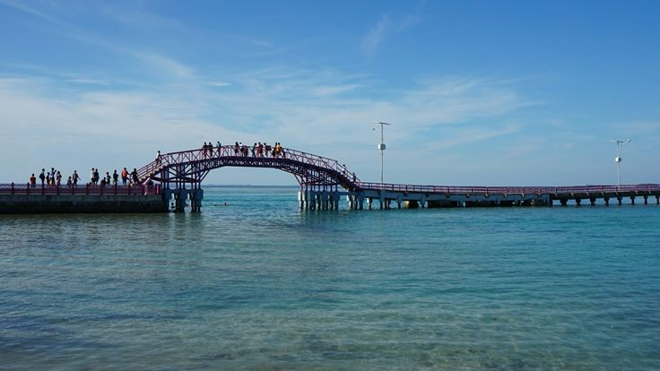
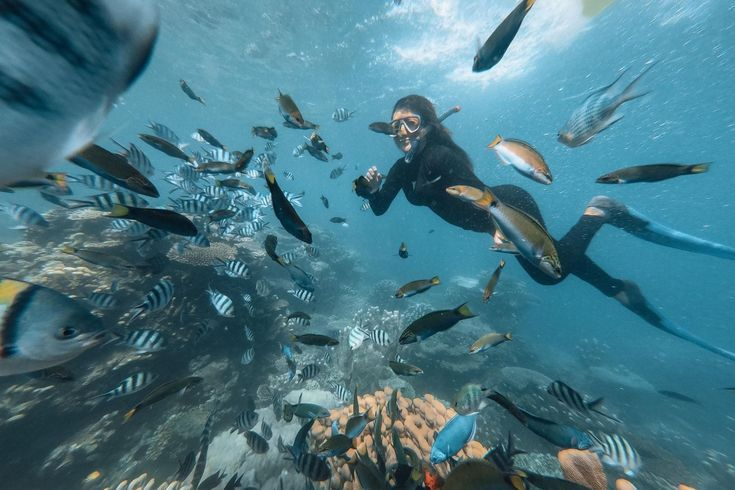

Surga Bahari di Utara Jakarta — Pasir Putih, Air Jernih, dan Ratusan Pulau untuk Dijelajahi
Meski namanya "Seribu", jumlah pulau di gugusan ini sebenarnya sekitar 342 pulau kecil yang tersebar di Teluk Jakarta. Sebagian menjadi kawasan konservasi dalam Taman Nasional Laut Kepulauan Seribu, sebagian lagi jadi pemukiman warga, dan sisanya disewakan sebagai resort atau pulau pribadi.
Setiap pulau punya ciri khasnya sendiri. Pulau Tidung terkenal lewat Jembatan Cinta yang menghubungkan Tidung Besar dan Tidung Kecil, Pulau Harapan jadi favorit karena akomodasinya lengkap, sementara Pulau Pramuka dan Pulau Macan lebih diminati pecinta diving karena spot terumbu karangnya masih terjaga. Cukup naik kapal sekitar 1–2 jam dari Jakarta, suasana kota langsung berganti jadi air laut biru jernih dan pasir putih.


| Aktivitas | Cocok Untuk |
|---|---|
| Snorkeling & Diving | Pecinta bawah laut, pemula sampai berpengalaman |
| Island Hopping | Yang mau lihat banyak pulau dalam satu trip |
| Banana Boat & Watersport | Rombongan/keluarga yang cari keseruan air |
| Sepedaan Keliling Pulau | Yang suka suasana santai dan lokal |
| Berburu Sunset di Dermaga | Yang hobi foto-foto |
Wilayah: Kabupaten Administrasi Kepulauan Seribu, Provinsi DKI Jakarta.
Titik keberangkatan: Pelabuhan Muara Angke atau Marina Ancol, Jakarta Utara.
Waktu tempuh: sekitar 1–2 jam naik kapal cepat atau kapal reguler, tergantung pulau tujuan.
| Kategori | Keterangan |
|---|---|
| Tiket Masuk Kawasan (WNI) | Rp5.000/orang/hari (rombongan pelajar/mahasiswa min. 10 orang: Rp3.000) |
| Tiket Masuk Kawasan (WNA) | Rp150.000/orang/hari |
| Estimasi Paket One Day Trip | Rp300.000 - Rp500.000/orang (sudah termasuk kapal PP, makan siang, snorkeling) |
| Akomodasi | Homestay, cottage, hingga resort pulau pribadi |
Cuplikan Keindahan Kepulauan Seribu: